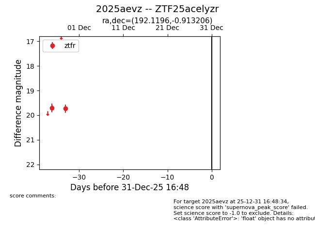
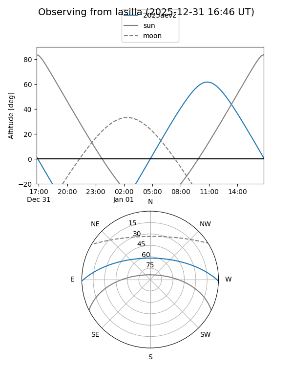
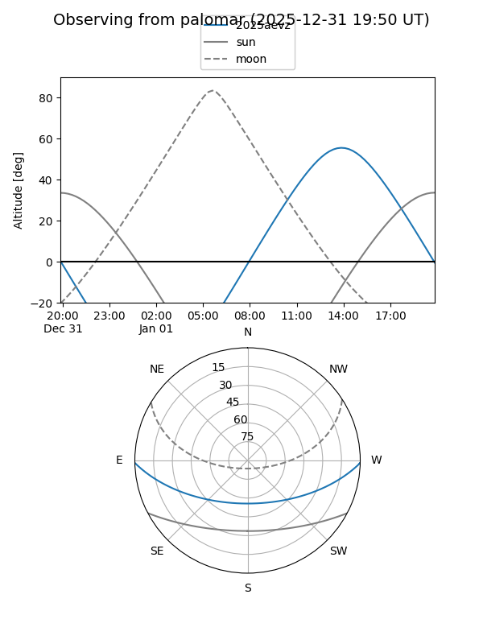

2025aevz
Target 2025aevz at 2025-12-18 11:17
Aliases and brokers:
FINK: fink-portal.org/ZTF25acelyzr
Lasair: lasair-ztf.lsst.ac.uk/objects/ZTF25acelyzr
ALeRCE: alerce.online/object/ZTF25acelyzr
TNS: wis-tns.org/object/2025aevz
YSE: ziggy.ucolick.org/yse/transient_detail/2025aevz
alt names
ZTF25acelyzr (ztf,fink_ztf)
2025aevz (tns,yse)
Coordinates:
equatorial (ra, dec) = 192.1196,-0.91321
equatorial (HMS+DMS) = 12:48:28.71,-00:54:47.54
galactic (l, b) = (301.3586,+61.94950)
Photometry
last ztfr=19.73
2 ztfr detections
Lightcurve

Visibility


Additional plots